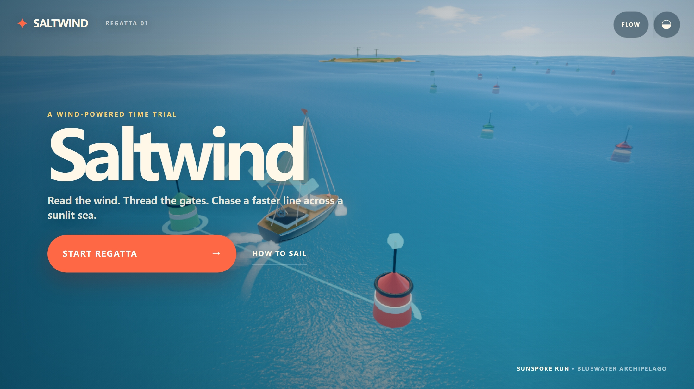
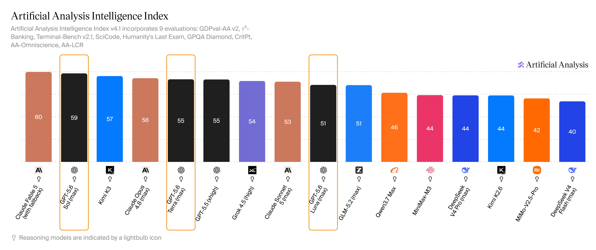
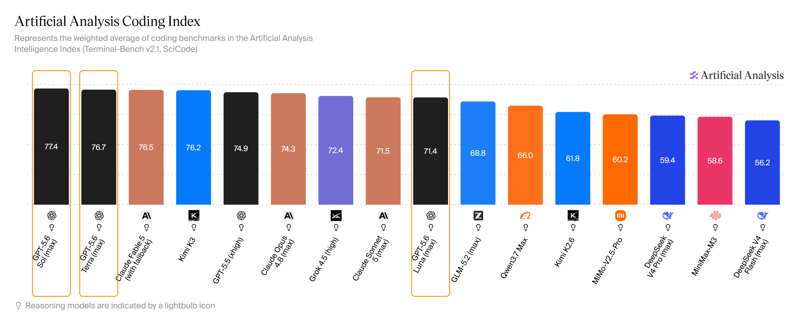
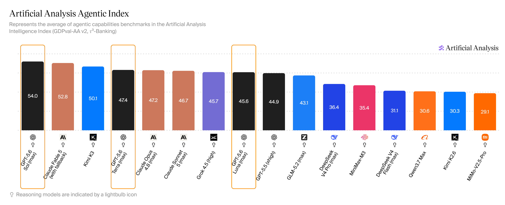
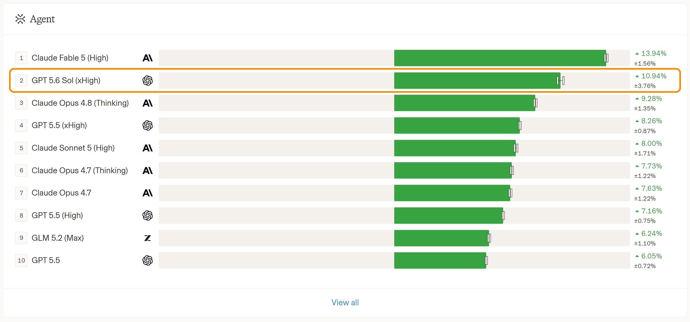
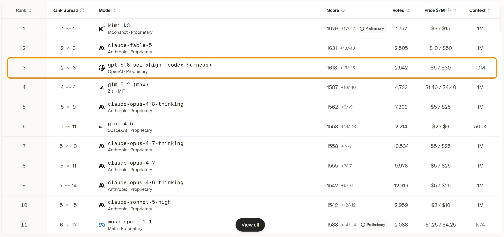
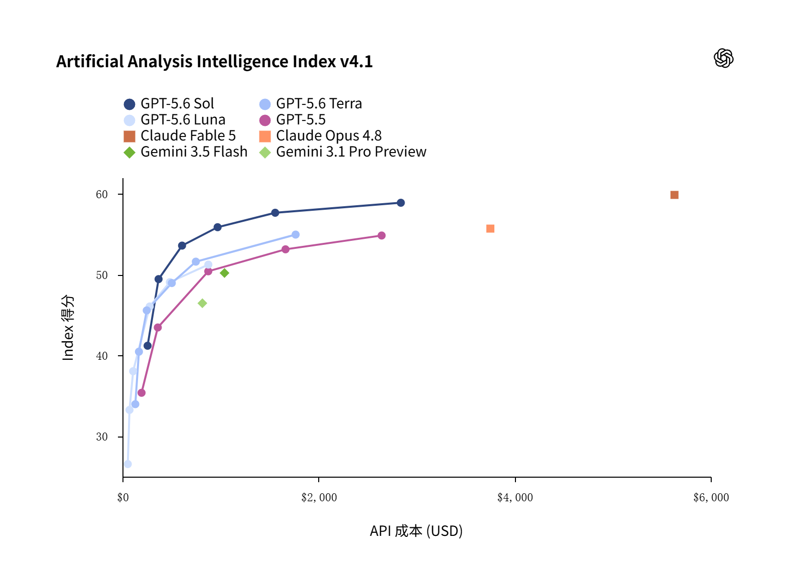
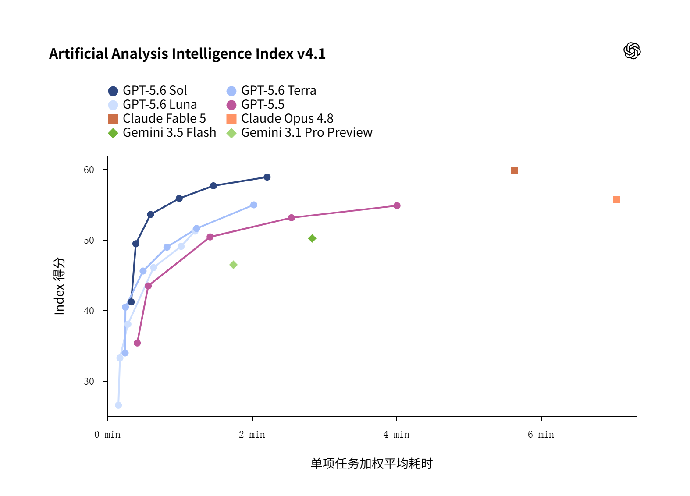

AI 行业快讯
GPT-5.6 来了：更强能力、更省Token！Sol、Terra、Luna 三档怎么选？
本页内容
更新日期 2026.7.19 数据来源 https://vibecoding.dreamfree.space
一句话速览：OpenAI 于 2026 年 7 月 9 日正式推出 GPT-5.6 系列——旗舰 Sol、均衡 Terra、性价比 Luna；独立评测 Artificial Analysis 智能指数约 59 / 55 / 51，Sol 紧贴 Claude Fable 5；Coding Index 约 77.4 居首，Agentic Index 约 54 居首；Arena Agent 盲测第 2、WebDev 第 3；API 价约 ¥35/210、¥17.5/105、¥7/42（每百万 tokens 输入/输出）。
2026 年 7 月 9 日，OpenAI 把新一代旗舰做成了「三件套」：不是只扔一个最强模型，而是用 Sol / Terra / Luna 覆盖顶尖、日常、便宜快三条赛道。官方说法很直白——每个 Token 更聪明，同样预算能干更多事；难题再加码开 max，再难就上 ultra 多智能体并行。下面依次说清：它是什么与能干嘛、强到哪、三档怎么选、和主流模型怎么比。
一、GPT-5.6 怎么样？Sol / Terra / Luna 是什么？
从 GPT-5.6 开始的新「太阳系」命名法。数字 5.6 表示代际；Sol / Terra / Luna 是三档能力：
| 档位 | 定位 | 适合谁 |
|---|---|---|
| Sol | 旗舰：编程、长任务、最难的活 | Plus 及以上、开发者、重度知识工作 |
| Terra | 均衡：接近上一代旗舰体验，更省 | 日常办公、免费/Go 用户默认档、要性价比的人 |
| Luna | 更快更便宜：够用就好 | 高频短任务、批量调用、预算紧 |
三个档位上下文均为 100 万 tokens ；均支持多模态（图像输入）。
之后预计会形成 GPT-5.7-Sol / GPT-5.7-Terra / GPT-5.7-Luna，GPT-5.8-Sol / GPT-5.8-Terra / GPT-5.8-Luna 这样的命名，类似 Anthropic 的 Fable / Opus / Sonnet 命名法。
三个档位和思考深度的关系
可以理解为三档能力对应的是三个模型，就像 DeepSeek V4 的 Pro / Flash 这样，Pro 和 Flash 是同一代不同档位的模型，不同的参数大小。Sol / Terra / Luna 也是类似的，其实是三个参数大小不同的模型，Sol 最大、Terra 中等、Luna 最小。每个档位都可以选择不同的思考深度（None / Low / Medium / High / Xhigh / Max）。
使用方法
目前可用入口包括：ChatGPT 聊天、ChatGPT Work、Codex 桌面端/Cli，以及 API。
7 月 9 日开始，ChatGPT 桌面端应用将“聊天” (Chat)、“工作”(Work) 与 Codex 融合为一个桌面应用。
能干嘛：编程、设计、办公一条龙
编程
官方自称「迄今最强编程模型」。Sol 被摆到编程 C 位：长仓库、终端流水线、多智能体拆活，是主战场。独立评测 Coding Index 约 77.4 居首，Terra 约 76.7 紧随其后；Luna 也能在更低成本下贴近上一代旗舰表现。开发者侧常见用法是 Codex、IDE 插件、Responses API 里的可编程工具调用——让模型自己写点胶水代码处理中间结果，而不是每一步都靠人回传。
设计与「看见界面再改」
官方强调设计审美与计算机使用一起上了台阶：不只吐代码，还能检查渲染结果、修视觉和交互问题。发布页演示过一句话做出可玩的 3D 航海小游戏等案例——高层次需求 → 可交互成品，中间少了很多「只会写、不会看」的往返。

一句话生成可玩的 3D 航海小游戏——来自 OpenAI 正式发布页
知识工作
从杂乱的资料、聊天记录、网盘文件里，整理成可分享的演示文稿、文档和表格，是另一条主线。官方称 Sol 在网页浏览、电脑操作类评测上刷新成绩；相对 GPT-5.5，做同样的事往往更少 Token、预估成本也更低。对普通人来说：同样交代一句「按这个模板改一版」，5.6 更少漏组件、更少排版翻车。
新增思考深度：max 与 ultra
默认就追求省 Token；遇到硬骨头，max 给单智能体更长推理、试错、自检时间；ultra 默认拉起约 四个智能体并行再汇总（严格说不是模型的思考深度，而是 Agent 的设定）——更贵，但往往更快出结果。
二、到底有多强：独立评测 + 盲测投票
1. Artificial Analysis：综合约第二，编程与 Agent 榜更亮
独立评测机构 Artificial Analysis（截至 2026 年 7 月 18 日）给出的 GPT-5.6 三档成绩大致如下：
| 指数 | Sol (max) | Terra (max) | Luna (max) | 简要说明 |
|---|---|---|---|---|
| Intelligence Index | 约 59（约第 2） | 约 55 | 约 51 | 紧贴 Fable（约 60）；Terra 与 GPT-5.5 同档 |
| Coding Index | 约 77.4（约第 1） | 约 76.7（约第 2） | 约 71.4 | 终端 + 科学编程加权；Sol/Terra 连拿前二 |
| Agentic Index | 约 54（约第 1） | 约 47.4 | 约 45.6 | 真实工作 / 工具 Agent 平均；Sol 高于 Fable 约 52.8 |
和其他常比的模型放一起看：Kimi K3 智能约 57、Claude Opus 4.8 约 56——Sol 仍处在闭源第一梯队；Terra、Luna 则把中高水平做得更经济。看榜时注意：这里的 Coding Index 是 Artificial Analysis 的编程指数，网上别处还有名称相近的编程类榜单，口径不一样，分数不能直接横比。
Intelligence Index（综合智能）
把多套评测加权综合成一个总分，覆盖知识问答、科学推理、编程、真实工作 Agent 等，用来看「整体有多聪明」。当前榜上 Claude Fable 5 约 60 仍略高一截，Sol 约 59 紧随其后；再往后是 Kimi K3、Opus 4.8、Terra，Luna 大约落在五十出头。

综合智能榜：Sol 约 59、紧贴 Fable，Terra/Luna 跟在后面——Artificial Analysis
Coding Index（编程）
更偏「写代码、改仓库、跑终端」一类能力，常见由 Terminal-Bench、SciCode 等加权。这里 Sol 约 77.4、Terra 约 76.7，前两名都是 GPT-5.6；Fable、Kimi K3、GPT-5.5 紧随其后。和综合榜不同：综合上 Fable 仍微微领先，编程榜上 Sol / Terra 更亮眼。

编程指数榜：Sol / Terra 连拿前二——Artificial Analysis
Agentic Index（工具 Agent）
看的是多步工具调用、真实工作流一类表现，更接近「交给 Agent 自己干活」。Sol 约 54 居首，高于 Fable 约 52.8；Terra、Luna 大约四十多分，和「旗舰干活、中低档更省」的定位一致。

工具 Agent 榜：Sol 约 54 居首，高于 Fable——Artificial Analysis
2. Arena：Agent 第二，前端第三
Arena 是真人盲测投票的实测榜（不是 Artificial Analysis 那套题库自动评测）：用户不知道模型名字，只凭完成质量投票，和上面的指数榜互补。榜上分数通常带误差区间，名次也会随票数变动；下面按当时榜单的中心值来读。
| 榜单 | GPT-5.6 Sol | 备注 |
|---|---|---|
| Agent | 10.94%，第 2（xHigh） | 同榜 GPT-5.5 xHigh 为 8.26%（第 4）；首位仍是 Fable 5 |
| WebDev（前端） | 1618，第 3（sol-xhigh，codex-harness） | 前两名：kimi-k3 1679、Fable 1631 |
Agent 榜
看的是复杂 Agent 任务上的盲测表现（百分比得分，图上带 ± 误差区间）。Sol（xHigh）10.94%、第 2；同榜 Fable 5 High 13.94% 仍更高，GPT-5.5 xHigh 8.26%、第 4——同一生态里，5.6 比 5.5 明显靠前。

真人盲测 Agent 榜：Sol 第 2——Arena
WebDev 榜
看的是前端 / 网页开发类任务的盲测分（Elo 风格，同样有置信区间）。Sol（sol-xhigh，codex-harness）1618、第 3，前面是 kimi-k3 1679、Fable 1631。这条带 codex-harness 标注，和没写 harness 的模型名次不好直接拿来比；票数还会继续涨，名次也可能动。

前端 WebDev 榜：Sol 第 3，前有 Kimi 与 Fable——Arena
三、三档 × 思考深度 怎么选？
实际使用里，大家更常纠结的是：想达到某一档智力水平，该选 Sol / Terra / Luna 的哪一档、开多深的思考强度，怎么组合又快又省又好。
下面这组对比，依据 OpenAI 正式发布页 上两张 Artificial Analysis Intelligence Index v4.1 图（得分 vs API 成本、得分 vs 单项任务加权平均耗时）。图中的「成本 / 耗时」是跑完这套综合智能评测的预估总花费（美元）和单项加权平均耗时（分钟），用来比较效率；和后文「每百万 tokens 标价」不是一回事。思考深度从浅到深大致为 None / Low / Medium / High / Xhigh / Max。成本统一用美元，方便直接横比。

得分与成本：三档各自随思考深度抬升，整体比 GPT-5.5 更「高分、相对更省」

得分与耗时：加深思考通常能提高分数，但单项平均等待也会变长
推荐组合
按照能力、任务速度和成本，配置的大致如下：
| 分数 | 大约什么概念 | 更值得默认 |
|---|---|---|
| ≈59 | 新一代天花板（≈ Claude Fable 5 Max） | Sol + Max |
| ≈55 | 上一代天花板，新一代日常档（≈ GPT-5.5 xHigh、Opus 4.8 Max） | Sol + High |
| ≈53 | 上一代日常档（≈ GPT-5.5 High） | Sol + Medium |
| ≈50 | 上一代国产最强一带（≈ GPT-5.5 Medium、GLM-5.2） | Sol + Low |
| ≈45 | 上一代国产主力水平（≈ Qwen3.7 Max、DeepSeek V4 Pro、MiniMax M3） | Terra + Medium |
| ≈40 | 中模型水平（≈ DeepSeek V4 Flash） | Terra + Low |
| <40 | 轻量与批量 | Luna + Low |
归纳一句：Sol 使用 Max → Low 解决中高难度任务，Terra 使用 Medium → Low 解决中低难度任务，Luna 使用 Low → None 解决轻量、批量任务、格式转换等任务。
下面按七个常见目标分数展开说明，按需查看，可略过：
1. 约 59 分：≈ Claude Fable 5 Max，新一代天花板
Claude Fable 5 Max 约 59.9（约 \$5631 / 5.6 分钟）。GPT-5.6 里能摸到这一带的，主要是 Sol 顶配：
| 组合 | 得分 | 评测成本 | 耗时 |
|---|---|---|---|
| Sol + Max | 约 58.9 | 约 \$2839 | 约 2.2 分钟 |
| Sol + Xhigh | 约 57.7 | 约 \$1558 | 约 1.5 分钟 |
| Terra / Luna | — | — | Max 分别约 55 / 51，够不到 59 |
更合适的是 Sol + Max：分数几乎贴着 Fable，评测成本大约只要 Fable 的 一半，耗时大约 五分之二。若还能接受略低一两分，Sol + Xhigh 更省。Terra、Luna 再怎么加深也到不了这一档。
2. 约 55 分：≈ GPT-5.5 xHigh、Opus 4.8 Max 上一代天花板
GPT-5.5 Xhigh 约 54.8（约 \$2644 / 4.0 分钟），Opus 4.8 Max 约 55.7（约 \$3753 / 7.1 分钟）。若目标落在这一带：
| 组合 | 得分 | 评测成本 | 耗时 |
|---|---|---|---|
| Sol + High | 约 55.9 | 约 \$970 | 约 1.0 分钟 |
| Terra + Max | 约 55.0 | 约 \$1766 | 约 2.0 分钟 |
| Luna | — | — | Max 约 51，达不到 55 |
更合适的是 Sol + High：分数接近甚至略高于 5.5 xHigh / Opus Max，评测成本大约只要 5.5 xHigh 的约 三分之一，耗时大约 四分之一。Terra Max 也能达到，但更贵、更慢，通常没有必要。
3. 约 53 分：≈ GPT-5.5 High 此前个人日常档
GPT-5.5 High 约 53.1（约 \$1663 / 2.6 分钟）。GPT-5.5 High 是我个人编码最常用的档位（毕竟日常工作不可能一直开最高思考吧，又慢又贵，没必要），新一代 Sol 的 Medium 即可达到这一分数：
| 组合 | 得分 | 评测成本 | 耗时 |
|---|---|---|---|
| Sol + Medium | 约 53.6 | 约 \$608 | 约 0.6 分钟 |
| Terra + Max | 约 55.0 | 约 \$1766 | 约 2.0 分钟 |
| Luna | — | — | 达不到 53 |
更合适的是 Sol + Medium：比原先常用的 5.5 High 分数略高，成本大约 三分之一多，耗时大约 四分之一。用 Terra Max 来打这个分位，偏浪费。
4. 约 50 分：≈ GPT-5.5 Medium、GLM-5.2 上一代国产最强
新一代国产最强已经是 Kimi K3，综合智能约 57，编程指数约 75，前端盲测约 1679（第 1，初步）。
GPT-5.5 Medium 约 50.4（约 \$875 / 1.4 分钟）。
| 组合 | 得分 | 评测成本 | 耗时 |
|---|---|---|---|
| Sol + Low | 约 49.4 | 约 \$368 | 约 0.4 分钟 |
| Terra + Xhigh | 约 51.6 | 约 \$748 | 约 1.2 分钟 |
| Luna + Max | 约 51.2 | 约 \$876 | 约 1.2 分钟 |
| Luna + Xhigh | 约 49.1 | 约 \$483 | 约 1.0 分钟 |
更合适的是 Sol + Low：在接近五十分的组合里，成本和耗时都更有利。Terra Xhigh / Luna Max 也能到 50 附近，但花费接近甚至超过当年的 5.5 Medium，优势有限。
5. 约 45 分：≈ Qwen3.7 Max、DeepSeek V4 Pro、MiniMax M3 （约 44–46）上一代国产主要水平
| 组合 | 得分 | 评测成本 | 耗时 |
|---|---|---|---|
| Terra + Medium | 约 45.6 | 约 \$248 | 约 0.5 分钟 |
| Luna + High | 约 46.1 | 约 \$278 | 约 0.7 分钟 |
| Sol + Low | 约 49.4 | 约 \$368 | 约 0.4 分钟 |
更合适的是 Terra + Medium；若更在意单价、可接受稍慢，可选 Luna + High。Sol 也能用，但对这一分位往往不是最经济的选择。
6. 约 40 分：≈ DeepSeek V4 Flash 一带（约 38–41）中模型大约分数
| 组合 | 得分 | 评测成本 | 耗时 |
|---|---|---|---|
| Terra + Low | 约 40.5 | 约 \$168 | 约 0.3 分钟 |
| Luna + Medium | 约 38.1 | 约 \$109 | 约 0.3 分钟 |
| Sol + None | 约 41.2 | 约 \$256 | 约 0.3 分钟 |
更合适的是 Terra + Low；若再压成本、可接受略低于 40，可选 Luna + Medium。Sol None 约 41 分，但这一层通常不必上 Sol。
7. 低于 40 分：简单轻量任务与批量调用
分数再低一截，主要是 Luna / Terra 的浅档：
| 组合 | 得分 | 评测成本 | 耗时 |
|---|---|---|---|
| Luna + Medium | 约 38.1 | 约 \$109 | 约 0.3 分钟 |
| Luna + Low | 约 33.3 | 约 \$72 | 约 0.2 分钟 |
| Terra + None | 约 34.0 | 约 \$131 | 约 0.3 分钟 |
| Luna + None | 约 26.6 | 约 \$54 | 约 0.2 分钟 |
更合适的是 Luna + Medium / Low / None：分数大约三十出头，成本与耗时都较低，适合高频短问答、粗加工和批量任务。
四、和其他模型对比
海外价按约 1 美元 ≈ 7 元折合。Arena WebDev 取 2026 年 7 月 18 日 的投票榜。
| 模型 | 一句话定位 | AA 智能指数 | Arena WebDev | API 输入/输出（元/M tokens） | 获取 |
|---|---|---|---|---|---|
| Claude Fable 5 | 当前综合天花板之一 | ~60 | 1631（第 2） | 约 70 / 350 | 闭源 |
| GPT-5.6 Sol | 又强又相对省的新旗舰 | ~59 | 1618（第 3） | 约 35 / 210 | 闭源 |
| GPT-5.6 Terra | 日常均衡，约一半标价贴近上一代旗舰 | ~55 | — | 约 17.5 / 105 | 闭源 |
| GPT-5.6 Luna | 更快更便宜，适合轻量与批量 | ~51 | — | 约 7 / 42 | 闭源 |
| Kimi K3 | 接近国际顶尖的国产新T0旗舰 | ~57 | 1679（第 1，初步） | 20 / 100 | 即将开源 |
| Claude Opus 4.8 | 上一代顶尖 Claude，仍很强 | ~56 | 1562（第 5） | 约 35 / 175 | 闭源 |
| GLM-5.2 | 上一代国产T0旗舰 | ~51 | 1587（第 4） | 约 10 / 31 | 开源 |
| DeepSeek V4 Pro | 量大管饱能力强 | ~44 | 明显靠后 | 约 3 / 6 | 开源 |
| MiniMax M3 | 更便宜的长上下文主力 | ~44 | 明显靠后 | 2.1 / 8.4 | 开源 |
- 对 Fable：综合智能基本相同，但编程指数和成本上 Sol 更有优势，单价大约一半。
- 对 Kimi K3：Sol 在 Artificial Analysis 综合分和编程指数上更突出；K3 前端盲测更靠前、人民币标价更友好，也走国产 / 开源路线。
- 对 Opus / GLM / DeepSeek / MiniMax：要体验和生态选 Sol/Fable；单价更低选 智谱 GLM-5.2 / DeepSeek V4 Pro/Flash / MiniMax M3。
五、总结
OpenAI 把 GPT-5.6 旗舰拆成可选三档：Sol 新一代T0；Terra 用 1/2 价格达到上一代T0；Luna 用 1/5 低价格应对轻量与批量任务。
Sol 档位 Artificial Analysis 综合约第二，Coding / Agentic 第一；Arena Agent 第二、WebDev 第三。
选型上：中高分用 Sol 的 Max → Low，中低分用 Terra 的 Medium → Low，轻量与批量默认 Luna 的 Low → None。
接下来几周，各家 Coding Plan、投票榜和套餐活动还会继续变——欢迎收藏、关注 DreamFree 网站，及时获取更新。
数据来源 https://vibecoding.dreamfree.space
原文链接 https://vibecoding.dreamfree.space/articles/news/20260719_gpt_5_6/
ChatGPT https://chatgpt.com/#pricing